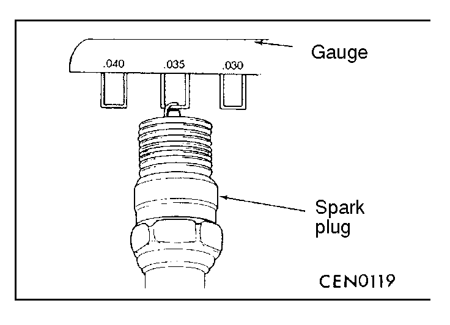

![[Previous]](https://mitsubishitechinfo.com/data/F24S/BUTTONS/fprevg.png)
![[Next]](https://mitsubishitechinfo.com/data/F24S/BUTTONS/fnextg.png)


SPARK PLUG CHECK AND CLEANING
(1)Remove the spark plug cables.
Caution
When pulling the spark plug cable boot from the plug, always hold the boot, not the cable.
(2)Remove the spark plugs.
(3)Check for a burned-out electrode or damaged insulator.
Check for even burning.
(4)Remove carbon deposits with wire brush or plug cleaner.
Remove sand from plug screw with compressed air.
(5)Use a gap gauge to check the plug gap.
Standard value: 1.22 - 1.35 mm (.048 - .053 in.)
If the plug gap is not within the standard value range, adjust by bending the ground electrode.
(6)Clean the engine plug holes.
Caution
Do not allow foreign matter to enter the cylinders.
(7)Install the spark plugs.